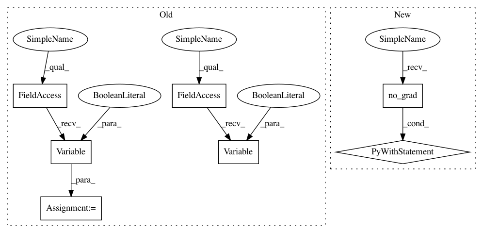

fcb04b6bf9e0a9c712a97ef1bd9d8c3829c60894,examples/imagenet_eval.py,,validate,#,211
Before Change
for i, (input, target) in enumerate(val_loader):
target = target.cuda()
input = input.cuda()
input_var = torch.autograd.Variable(input, volatile=True)
target_var = torch.autograd.Variable(target, volatile=True)
// compute output
output = model(input_var)
loss = criterion(output, target_var)
After Change
def validate(val_loader, model, criterion):
with torch.no_grad():
batch_time = AverageMeter()
losses = AverageMeter()
top1 = AverageMeter()
top5 = AverageMeter()
// switch to evaluate mode
model.eval()
end = time.time()
for i, (input, target) in enumerate(val_loader):
target = target.cuda()
input = input.cuda()
// compute output
output = model(input)
loss = criterion(output, target)
// measure accuracy and record loss
prec1, prec5 = accuracy(output.data, target.data, topk=(1, 5))
losses.update(loss.data[0], input.size(0))
top1.update(prec1[0], input.size(0))
top5.update(prec5[0], input.size(0))
// measure elapsed time
batch_time.update(time.time() - end)
end = time.time()
if i % args.print_freq == 0:
print("Test: [{0}/{1}]\t"
"Time {batch_time.val:.3f} ({batch_time.avg:.3f})\t"
"Loss {loss.val:.4f} ({loss.avg:.4f})\t"
"Acc@1 {top1.val:.3f} ({top1.avg:.3f})\t"
"Acc@5 {top5.val:.3f} ({top5.avg:.3f})".format(
i, len(val_loader), batch_time=batch_time, loss=losses,
top1=top1, top5=top5))
print(" * Acc@1 {top1.avg:.3f} Acc@5 {top5.avg:.3f}"
.format(top1=top1, top5=top5))
return top1.avg, top5.avg
def save_checkpoint(state, is_best, filename="checkpoint.pth.tar"):
torch.save(state, filename)
if is_best:
shutil.copyfile(filename, "model_best.pth.tar")
In pattern: SUPERPATTERN
Frequency: 3
Non-data size: 7
Instances
Project Name: Cadene/pretrained-models.pytorch
Commit Name: fcb04b6bf9e0a9c712a97ef1bd9d8c3829c60894
Time: 2018-12-13
Author: remi.cadene@icloud.com
File Name: examples/imagenet_eval.py
Class Name:
Method Name: validate
Project Name: gpleiss/efficient_densenet_pytorch
Commit Name: b0a156d87b736d90c3e27933e8e4d0114bd5ef36
Time: 2019-01-27
Author: gpleiss@gmail.com
File Name: demo.py
Class Name:
Method Name: test_epoch
Project Name: Cadene/pretrained-models.pytorch
Commit Name: fcb04b6bf9e0a9c712a97ef1bd9d8c3829c60894
Time: 2018-12-13
Author: remi.cadene@icloud.com
File Name: examples/imagenet_eval.py
Class Name:
Method Name: validate
Project Name: mapillary/inplace_abn
Commit Name: 5c28a8708b9662668a4a6f4c78bcf0a215eb9e87
Time: 2018-07-17
Author: lorenzo@mapillary.com
File Name: test_imagenet.py
Class Name:
Method Name: validate